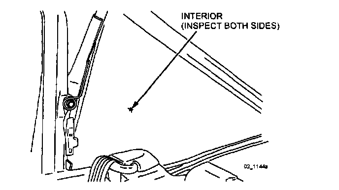
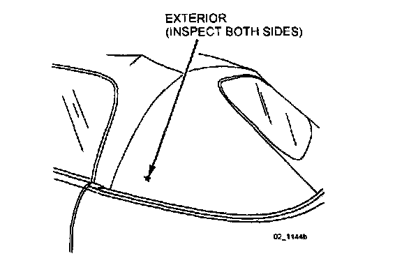
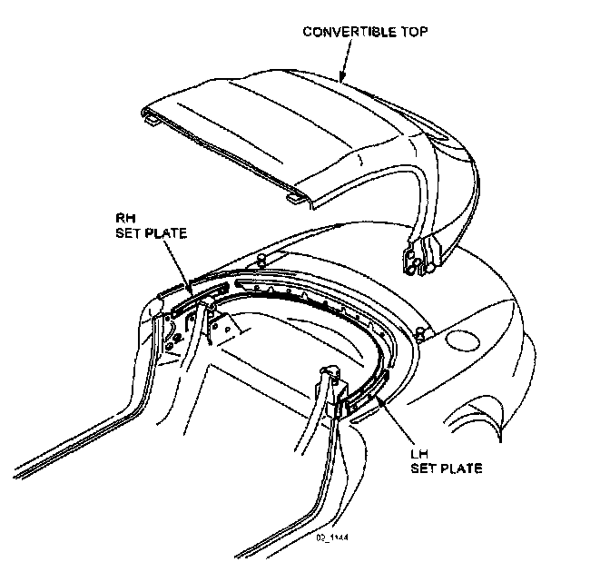
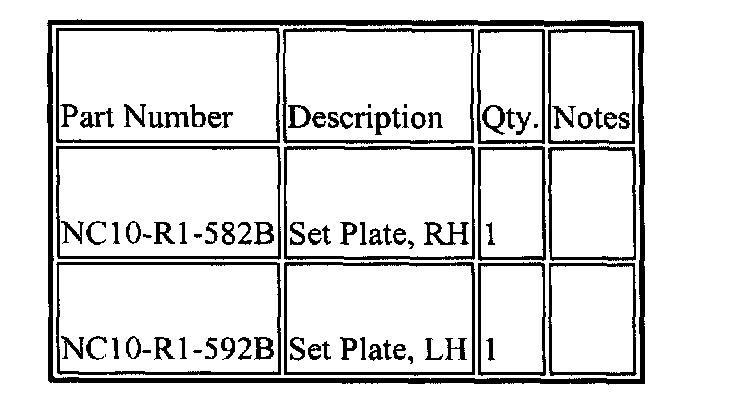
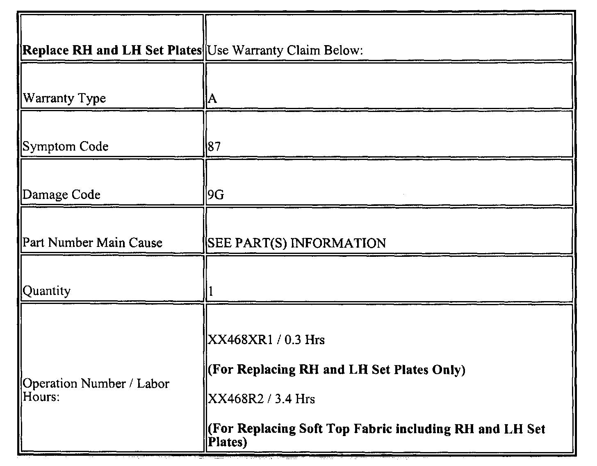

Body - Convertible Top Fabric Splitting
09-003/031999 - 2002 MIATA - SOFT TOP SPLIT
APPLICABLE MODEL(S)/VINS
All 1999-2001 Miata and 2002 Miata with VIN before JM1NB353**0 231580.
DESCRIPTION
Customer complains of soft top splitting on either side. Possible cause may be due to the soft top fabric being caught between the stopper and soft top link. To correct this condition and to prevent future occurrences, follow the procedure outlined in this bulletin for replacing the Right-hand and Left-hand Set Plates with revised parts, and for inspecting the soft top fabric.
REPAIR PROCEDURE
1. Verify condition by inspecting the soft top fabric for splitting or holes in B-pillar area of soft top.

^ If soft top wear marks are visible only at the vehicle interior side and have not worn through to exterior, then soft top replacement is not required. Skip to Step 5 and replace only the RH and LH Set Plates.

^ If splitting of holes are visible on the exterior of the soft top, then proceed to the next steps for replacing both the soft top fabric and the set plates.
2. Remove the convertible top following removal procedure in the applicable Workshop Manual (Convertible Top Removal / Installation section 09-16).
3. Disassemble and replace the soft top fabric from the mechanism assembly following the procedure in the applicable Workshop Manual (Top Fabric Removal / Installation section 09-16).
4. Reinstall the convertible top following installation procedure in the applicable Workshop Manual (Convertible Top Removal / Installation section 09-16).

5. Replace the RH and LH Set Plates with a newly revised parts as shown.
NOTE:
New revised RH and LH Set Plates must be installed for an effective repair.
6. Perform necessary adjustments to ensure correct fit and operation.
7. Verify repair.

PARTS INFORMATION
WARRANTY INFORMATION

NOTE:
This information applies to verified customer complaints on vehicles covered under normal warranty. Refer to the SRT microfiche for warranty term information.

Disclaimer